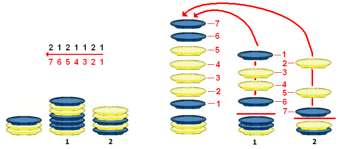

Le castor a fabriqué un robot pour ranger ses assiettes. Il le place devant trois piles d'assiettes, puis lui donne la suite de chiffres suivante :
2 1 2 1 1 2 1
Le robot lit chaque chiffre un par un, et effectue à chaque fois l'action correspondante :
Quel était l'agencement des assiettes avant que le robot ne commence ?
Une première manière de résoudre ce problème consiste à partir de chacune des propositions, et à simuler les actions du robot sur chacune de ces situations de départ, pour déterminer le résultat et vérifier s'il correspond à la situation finale présentée dans le sujet. Cette solution fonctionne, mais nécessite de faire 4 fois l'exécution des commandes sans se tromper, ce qui est un peu long. On peut cependant gagner du temps si l'on remarque que seules les propositions A et D contiennent 7 assiettes bleues comme dans la situation finale, donc que ce sont les deux seules qui ont une chance de fonctionner.
Un deuxième manière plus astucieuse, consiste à "remonter le temps", et à effectuer les actions du robot en ordre inverse, en partant de la situation finale, et en lisant la séquence de nombre à l'envers. Un 1 signifie alors qu'on prend une assiette de la pile 1 pour la placer sur la pile de gauche, et un 2 signifie que l'on prend une assiette de la pile 2 pour la placer sur la pile de gauche. L'illustration ci-dessous présente cette méthode :

La situation que l'on obtient en exécutant les commandes à l'envers correspond à la proposition A.
Ce robot exécute un programme dans un langage de programmation extrêmement rudimentaire. Cela reste malgré tout représentatif de ce qu'est un programme informatique : une série de commandes basiques expliquant sans ambiguïté pour la machine les actions à entreprendre. Les premiers modèles de programmation n'étaient pas tellement plus évolués.
La machine de Turing inventée en 1936 par Alan Turing est par exemple un modèle théorique constitué d'un simple ruban et d'une tête de lecture/écriture positionnée sur ce ruban. La machine est programmée en indiquant quel symbole écrire à la position courante et quel déplacement réaliser sur le ruban, en fonction du symbole actuellement sous la tête de lecture et de l'historique des actions précédentes. Ce modèle de calcul reste encore de nos jours une référence pour tous les langages de programmation modernes.